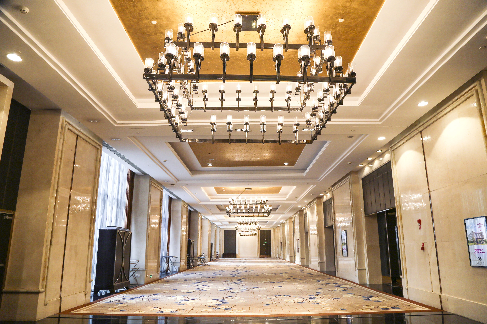

    <!--background color-->
    <script type="text/javascript">
        document.write ('<body style="background: Gainsboro; background-attachment: fixed;">')
    </script>


    <section id="venue" class="black-frame about about-container about-container-top">

    <div class="event black-frame">
      <h1>{{ page.title }}</h1>


                 <p><center>时间: 2019年10月30日<br>
                 Date: 30th, Oct. 2019<br><br>
                 地点:  成都新希望高新皇冠假日酒店璀璨厅<br>
                 Location:  Crowne Plaza Chengdu West</center></p>

    <!-- <div class="venue-map">
      <iframe src="https://www.google.com/maps/embed/v1/place?key=YOUR_API_KEY&q=Space+Needle,Seattle+WA" frameborder="0" style="border:0" allowfullscreen></iframe>
    </div> -->

      <h2 class="first">会场信息</h2>
      成都新希望高新皇冠假日酒店位于高新西区，雅致写意的设计风格，舒适宽敞的灵动空间，成都高新皇冠假日酒店为您提供高品质的居停之所。<br><br>

      作为高新西区的全新地标，酒店的外观气势恢宏，大堂装潢典雅大气。三百余间优质客房，面积超大，柔软大床和羽绒被让人一夜好眠。干湿分开的洗浴室也非常宽敞，干净的浴缸能让你安心泡澡。<br><br>
      5间风格各异的餐厅、酒吧，为你开启舌尖上的美妙之旅。总面积达6500平方米的奢华宴会厅区，多种不同规格的会议都在此举行。<br><br>
      健身房内有先进的健身器材；还有<b>超大室内泳池</b>，为你和家人提供运动、玩乐的好去处。<br><br>

      <h2 class="first">地址</h2>
四川省成都市高新西区西芯大道1号成都新希望高新皇冠假日酒店2层

      <h2 class="first">交通</h2>

    酒店距成都双流国际机场仅30分钟路程，选择<b>地铁2号线</b>即可直达成都市中心天府广场。更可轻松游览被列入“世界文化遗产”的旅游度假胜地青城山以及素有“水利文化的鼻祖”之称的都江堰。熊猫基地、欢乐谷主题公园等引人入胜的地区景点也可快速抵达。


          <h2 class="first">会场图片</h2>


          <div class="icon-about img-responsive">
            
          </div>

          <div class="icon-about img-responsive">
            
          </div>

          <div class="icon-about img-responsive">
            
          </div>


          <h2 class="first">附近景点</h2>
          - 成都大熊猫繁育研究基地, 35 分钟车程.<br>
          - 成都欢乐谷, 20 分钟车程.<br>
          - 青城山|都江堰, 40 分钟车程.<br>
          - 金沙遗址博物馆, 20 分钟车程.<br>
          - 宽窄巷子, 30 分钟车程.

    </div>
    </section>
